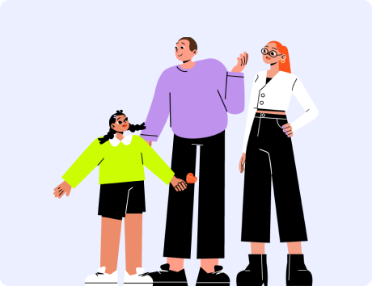
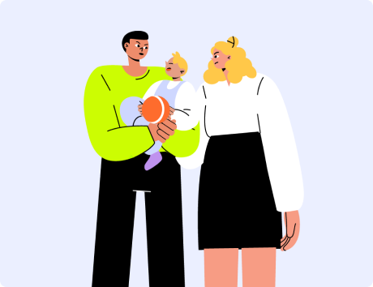

Здорові стосунки між дитиною та батьками — це основа для формування надійної прив’язаності. Взаємини батьків є для дитини прикладом стосунків. Стиль прив’язаності та наслідування сімейних сценаріїв закладають патерни поведінки з іншими людьми протягом усього життя — здорові або дисфункціональні.
Теорія прив'язаності: чим вона корисна для розуміння дитячо-батьківських стосунків?
Головне про теорію прив'язаності
Раніше вважалося, що дорослий потрібний дитині лише для задоволення фізичних потреб. Англійський психіатр і психоаналітик Джон Боулбі, автор теорії прив'язаності, додав до цього соціальну складову: прихильність дитини до матері допомагає адаптуватися до навколишнього світу. Тісний зв'язок із людьми, що заслуговують на довіру, створює умови, в яких розвиваються мозок, нервова система та основні поведінкові патерни людини.
Теорія прив'язаності — обґрунтована теорія розвитку особистості — доводить: у надійних і безпечних зв'язках із людьми, яким людина довіряє, формується її здатність до управління емоціями, психологічна стійкість і гнучкість. Нині це одна з провідних теорій, що використовується в галузі дитячого та дорослого психічного здоров'я, сімейних та міжособистісних відносин.
Сприйняття об'єктів прив'язаності як чуйних, небайдужих та взаємно щирих визначає якість та безпеку прив'язаності. Якщо в ситуаціях, коли людині потрібна підтримка, близькі люди сприймаються як відсторонені, байдужі або навіть загрозливі, вона переживає втрату відчуття безпеки. Це може призводити до розвитку надмірної пильності, тривоги у взаємодії з іншими людьми, гіперактивності або пасивності, стримування емоцій прихильності або їх уникнення, відкидання.
У залежності від того, в яких умовах сформувалася прив'язаність у дитини, вона може стати здоровою (безпечною) або порушеною. Ці стилі прив'язаності характеризуються різними способами взаємодії та поведінки у стосунках як у дітей, так і в дорослих. Зазвичай люди несвідомо очікують, що романтичні партнери(-ки) поводитимуться так само, як їхні батьки, тому діють виходячи з цих очікувань. Ці тенденції виявляються незалежно від цього, усвідомлюються вони чи ні.
При бажанні та відповідній роботі над собою стиль прив'язаності можна змінити!
Що таке прив'язаність?
Надійна прив’язаність є базовою потребою людини. Це емоційні близькі стосунки, які дитина встановлює із важливим(-ою) для неї дорослим(-ою) для задоволення потреб у безпеці, надійності та захисті. Зазвичай перша прив’язаність дитини формується до матері, але у деяких обставинах — до іншої людини, що піклується про неї: батька, бабусі, дідуся або людини, яка не має кровної спорідненості з дитиною.

Як формується здорова (безпечна) прив’язаність
Дитина має значимого(-у) дорослого(-у), який(-а) про неї піклується, на якого(-у) спрямований її біологічний інстинкт щодо встановлення близкості.
Якщо дитина відчуває тривогу чи фізичний дискомфорт у неї виникає потреба у захисті та усуненні неприємних відчуттів.
Дитина реагує на дискомфорт і повідомляє про потребу плачем.
Дорослий(-а) розпізнає цю потребу, помірно емоційно відкликається на неї та заспокоює дитину, розповідаючи, що з нею відбувається. Цей процес залежить від спроможності дорослого(-ї) до емпатійного сприйняття.
Дорослий(-а) адекватно задовольняє потребу дитини: якщо дитина хоче їсти — годує, якщо в неї щось болить — дає ліки. Важливо саме адекватно, вчасно і передбачувано задовольняти потреби. Невелика кількість помилок є необхідною, щоб дитина навчалася виносити фрустрацію. Між виникненням потреби та її задоволенням може бути малий проміжок часу, щоб дитина навчалася терпіти дискомфорт. Непередбачуване реагування дорослого(-ї) є неприпустимим.
Якщо дорослий(-а) вгадує і правильно задовольняє потребу, дитина розслабляється та заспокоюється. У неї формуються нейронні зв'язки (потреба — задоволення) і на цій основі уявлення "я — хороший(-а)", "дорослий(-а) — хороший(-а)". Це сприяє спроможності дитини обернутися обличчям до світу та досліджувати його.
Дитина збирає пірамідку, але у неї не виходить.
Виникнення потреби
Дитина починає плакати і все руйнувати.
Виникнення реакції
Приходить мама, бачить стан дитини, розкидані іграшки. Підходить, опускається на рівень очей дитини, оглядає її та запитує, чи вона не вдарилась.
Розпізнавання потреби
Дитина махає головою, що вона не вдарилась, і вказує пальчиком на пірамідку.
Виникнення реакції
Мама запитує, що сталось, чи вона зламана, і вони разом перевіряють це.
Розпізнавання потреби
Дитина намагається пояснити, що не виходить скласти пірамідку.
Виникнення реакції
Мама допомагає дитині скласти пірамідку, дитина заспокоюється (Мама реагує на потребу, дитина заспокоюється).
Виникнення потреби
Мама хвалить дитину: "Ти молодець! Тобі вдалося скласти пірамідку до кінця."
Формування уявлень "я – хороший(-а)", "дорослий(-а) – хороший(-а)", "світ безпечний і цікавий"
Завдяки надійній прив’язаності у дитини розвивається реалістичне сприйняття себе, самостійність, допитливість, довіра до людей та емпатія, а також здатність регулювати емоції та встановлювати конструктивні соціальні стосунки.
Як формується порушена прив’язаність?
Дитина має значимого(-ї) дорослого(-ї), який про неї має піклуватися, на якого спрямований її біологічний інстинкт щодо встановлення близкості.
Якщо дитина відчуває тривогу чи фізичний дискомфорт у неї виникає потреба у захисті та усуненні неприємних відчуттів.
Дитина реагує на дискомфорт і повідомляє про потребу плачем.
Дорослий(-а) НЕ розпізнає цю потребу, тому або не відкликається адекватно, або його/її емоційна реакція є надмірною. Погіршує ситуацію, якщо дорослий(-а) не пояснює дитині, що з нею відбувається і чому.
Дорослий(-а) НЕ задовольняє потребу дитини. Якщо це відбувається надто часто, це перевищує спроможність дитини виносити фрустрацію.
Якщо дорослий(-а) постійно фруструє дитину і не допомагає їй заспокоїтися, замість довіри дитина відчуває гнів або страх. У неї формуються уявлення "я — поганий(-а)", "дорослий(-а) — поганий(а)", "світ небезпечний". Дитина залишається у стані напруження і неспроможна досліджувати світ і добре розвиватися.
Батьки купили дитині новий самокат та застерегли, щоб вона його не зламала, коли буде гратися.
Виникнення напруги
Дитина вчилася кататися та невдовзі впала, забруднилася і подряпала самокат. Вона розплакалася через біль та розпач, але страх перед батьками змусив дитину проковтнути сльози та приречено чекати їхньої реакції.
Виникнення потреби
Батьки насварили дитину за пошкоджений самокат та звинуватили її у неуважності та невдячності.
Відсутність розпізнавання та задоволення потреби
Батьки суворо заборонили дитині: "Ти більше ніколи не будеш кататися на самокаті, бо не вмієш цінувати речі". Дитина залишилася у стані напруження та наодинці зі своїми переживаннями.
Формування уявлень "я — поганий(-а)", "дорослий(-а) — поганий(-а)", "світ небезпечний і жорстокий"
У разі порушеної прив'язаності дитина залишається неспроможною самотужки впоратися з напругою та емоційним перезбудженням. Її психологічні кордони частково невибудовані, частково порушені, самооцінка неадекватна, вона схильна до залежності або негативізму. Така дитина не має достатнього ресурсу для розвитку, гри, творчості, навчання, дружби, адже постійно очікує від світу неприємностей. Її подальші стосунки з іншими людьми можуть бути ускладнені негативними очікуваннями та невмінням будувати взаємодію на основі довіри.

Як впливають на дітей токсичні стосунки батьків та домашнє насильство?
Насильство руйнує близькі стосунки в сім’ї, відчуття безпеки самої дитини та довіру до світу в цілому. Насильство щодо дитини наносить їй фізичні та психологічні травми, які спотворюють все її майбутнє життя. Дитина-свідок домашнього насильства також є постраждалою, адже травмується психологічно, що впливає на її розвиток та психоемоційний стан.
Діти, які постраждали від домашнього насильства, можуть мати такі проблеми:
Високий рівень стресу/хронічний стрес — стан організму, що знаходиться в постійній напрузі та тривозі
Порушений контакт із дорослими та спотворені взаємини у родині